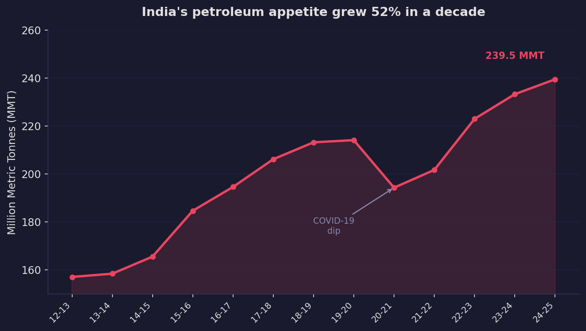
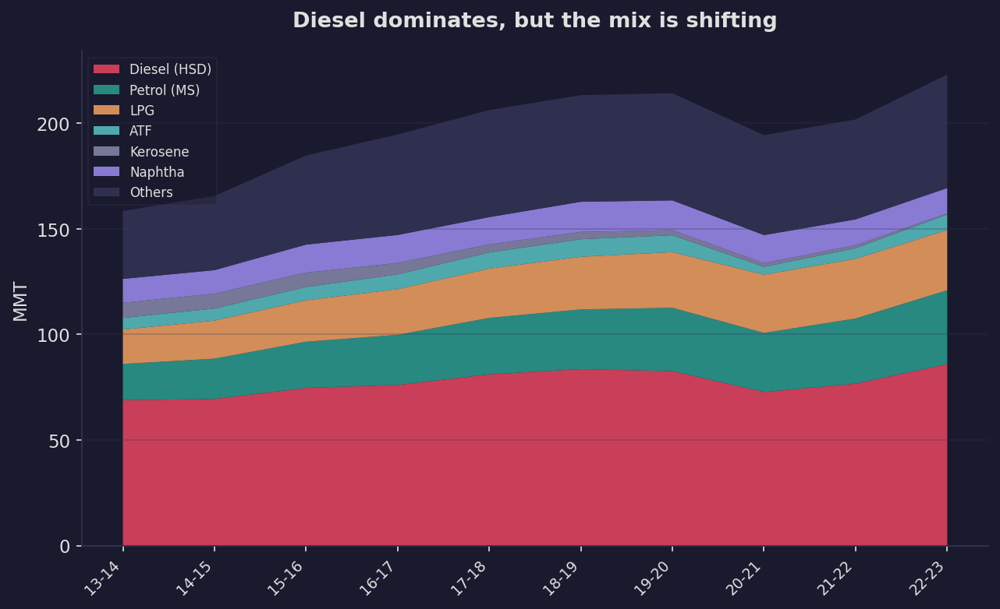
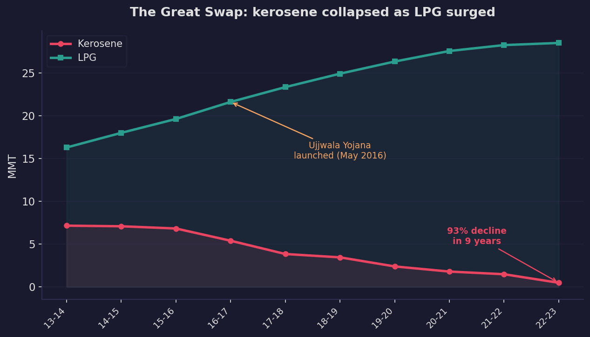
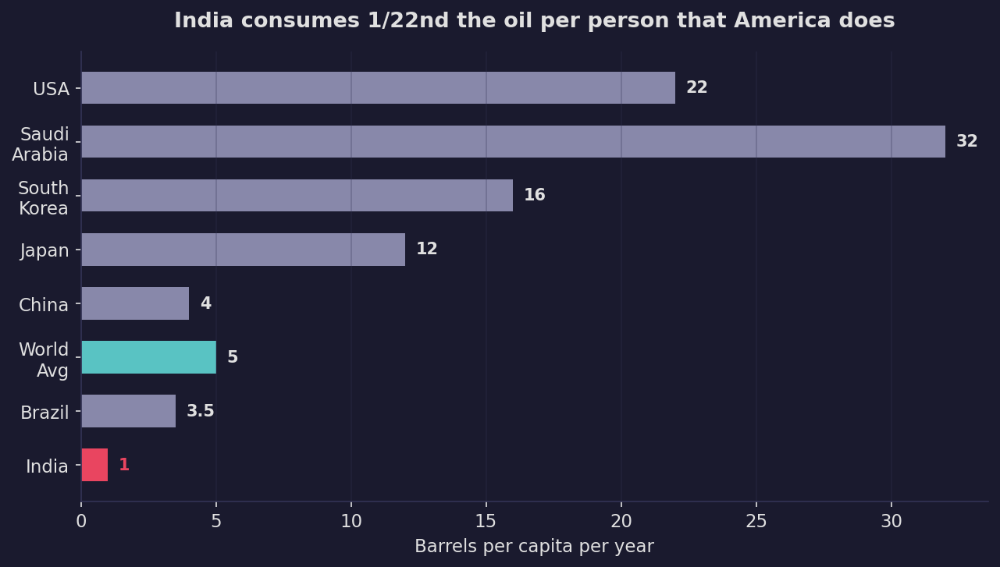
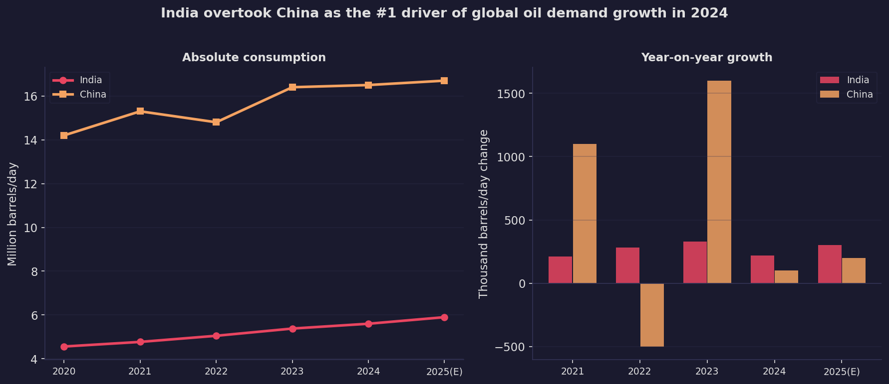
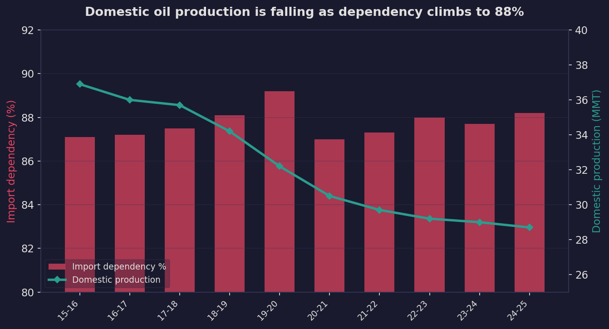
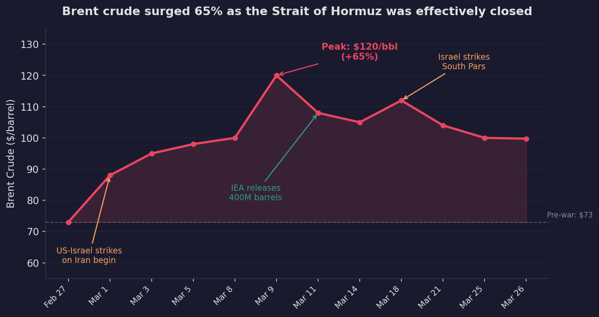
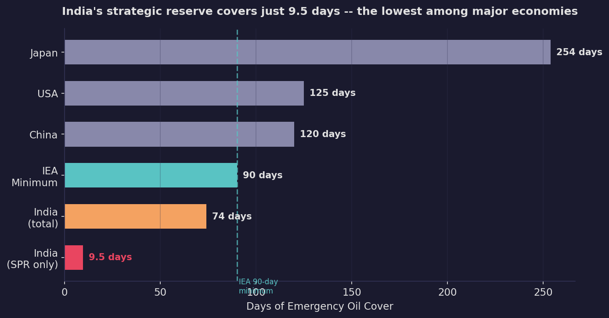

The world's third-largest oil consumer uses 1/22nd the oil per person that America does. That gap is the story of what comes next.
India consumed 239.5 million metric tonnes of petroleum products in FY 2024-25 -- roughly 5.6 million barrels every day. That makes it the world's third-largest oil consumer, behind only the United States and China.
But what makes India's petroleum story genuinely consequential is not the absolute number. It is the per capita headroom. An Indian consumes about one barrel of oil per year. An American consumes twenty-two. A Chinese citizen consumes four. India is not yet even at the global average. The scale of what is coming -- as incomes rise, roads extend, and two-wheelers multiply -- is what keeps energy planners up at night.
Over the past decade, total consumption has grown 52%, from 157 MMT in 2012-13 to 239.5 MMT in 2024-25, compounding at roughly 3.9% per year.

The COVID-19 dip in FY 2020-21 (194 MMT) is the only year in the last decade where consumption actually fell. Recovery was swift -- by FY 2022-23, India had not only recovered but exceeded pre-pandemic levels by a comfortable margin.
Not all petroleum products are created equal. Diesel is king, accounting for nearly 39% of all consumption -- overwhelmingly burned by trucks, buses, and agricultural pump sets. Petrol (motor spirit) comes second at 17%, driven by the explosive growth of two-wheelers and passenger cars. LPG is third at 13%, the cooking fuel for 330 million households.

The most interesting stories are not in what stayed large, but in what changed. Two products tell the tale of India's energy transition better than any policy document.
In FY 2013-14, India consumed 7.16 million tonnes of kerosene -- the fuel of lamps and stoves in rural households that had no electricity or gas connections. By FY 2022-23, that number had fallen to 0.49 million tonnes. A 93% collapse in nine years.

The mirror image is LPG. From 16.3 MMT to 28.5 MMT over the same period -- a 75% increase. The inflection point was the Pradhan Mantri Ujjwala Yojana, launched in May 2016, which distributed over 10 crore (100 million) free LPG connections to below-poverty-line households. LPG coverage jumped from 61% of households to nearly 95% by 2019.
One in twenty Indian homes cooked with kerosene a decade ago. Today, kerosene barely registers as a statistical category. LED lighting completed what LPG started -- the lamp fuel of a billion people disappeared in under a decade.
The swap was not cost-free. India now imports roughly 60% of its LPG, adding another layer to the import dependency story.
This is the chart that explains why every oil company, OPEC strategist, and energy analyst watches India. At one barrel per person per year, India consumes a fraction of what even modestly developed economies burn.

India does not need to reach American levels (nor should it, for climate reasons). But even converging toward China's 4 barrels per capita would quadruple India's total oil consumption. The International Energy Agency projects India will be the single largest source of global oil demand growth through 2030, adding roughly one million barrels per day to global demand.
In 2024, something historic happened: India surpassed China as the number-one driver of global oil demand growth. Not because India is consuming more in absolute terms -- China still burns three times as much -- but because China's growth is plateauing as EVs capture over 50% of new car sales. India's growth, by contrast, is accelerating.

China's oil demand is widely expected to peak in 2025-2026. Its gasoline consumption is already declining as electric vehicles reshape the transport fleet. India, by contrast, has an EV penetration rate in the low single digits and a vehicle fleet that is still overwhelmingly two-wheelers and diesel trucks.
The structural implication: for the next decade, the marginal barrel of global oil demand will increasingly be Indian.
India produces approximately 28.7 million tonnes of crude oil domestically. It consumes over 260 million tonnes. The gap -- more than 88% -- is filled by imports, primarily from the Middle East and Russia.

Domestic production has been declining steadily -- from 36.9 MMT in 2015-16 to 28.7 MMT in 2024-25. India's proven reserves of 4.98 billion barrels would sustain current consumption for roughly two and a half years if imports stopped entirely.
India's oil import bill was approximately $130 billion in FY 2024-25, making it the single largest item in the country's import basket. Every $10 increase in crude oil prices adds roughly $15 billion to the annual import bill.
For all the growth, there are emerging signals worth watching:
Diesel demand is decelerating. Growth fell from 12% in FY 2022-23 to 4.3% in FY 2023-24 to just 2% in FY 2024-25 -- the slowest since the pandemic. Railway electrification is reducing diesel demand on the rail network. LNG-powered trucks are entering the freight fleet. Electric three-wheelers are multiplying in cities.
Aviation fuel (ATF) has fully recovered. ATF demand crashed 54% during COVID (from 8.3 MMT to 3.7 MMT in a single year) -- the most dramatic product-level collapse in the dataset. By FY 2025-26, it is expected to reach a record 9.9 MMT, reflecting domestic air passenger traffic running 12.6% above pre-COVID levels.
Petrol consumption doubled in a decade -- from 19 MMT (2014-15) to roughly 40 MMT (2024-25) -- driven almost entirely by two-wheeler and car ownership growth. This is the product most sensitive to EV adoption, which in India remains nascent but growing.
Everything described above -- the 88% import dependency, the 60% LPG import reliance, the inadequate strategic reserves -- shifted from abstract risk to lived reality on February 28, 2026, when US-Israeli strikes on Iran triggered the effective closure of the Strait of Hormuz.
The Strait carries 20 million barrels per day -- roughly 20% of global petroleum liquids and one-quarter of all seaborne oil trade. The disruption was, in the IEA's words, "the greatest global energy security challenge in history" -- three to five times larger than the 1973 oil embargo.

Brent crude surged from $73 to $120 in eleven days -- a 65% spike. Even after the IEA released a record 400 million barrels from emergency stockpiles (dwarfing the 183M released after Russia's Ukraine invasion), prices settled around $100, still 37% above pre-war levels.
The most immediate impact on Indian households was not petrol or diesel -- it was cooking gas. Roughly 90% of India's LPG imports transit Hormuz, primarily from Qatar (34%), UAE (26%), and Kuwait (8.3%). When the strait closed, India's LPG supply chain was effectively severed.
LPG cylinder prices jumped Rs 60 overnight (to Rs 913 per 14.2kg cylinder in Delhi). Deliveries were delayed 7-14 days. The government imposed minimum booking gaps -- 25 days in urban areas, 45 days in rural. The Essential Commodities Act was invoked; over 12,000 raids conducted and 15,000 cylinders seized from hoarders.
The irony is bitter. India spent a decade replacing kerosene with LPG through Ujjwala Yojana -- a genuine public health triumph. But in doing so, it traded one vulnerability (indoor air pollution) for another (import dependency through a single chokepoint). The 330 million households now on LPG discovered that their clean cooking fuel comes through the world's most contested waterway.
| Metric | Pre-War | Post-War | Impact |
|---|---|---|---|
| Brent crude | $73/bbl | ~$100/bbl | +37% |
| GDP growth forecast | 7.0% | 5.9% | -1.1pp (Goldman Sachs) |
| Inflation forecast | 3.9% | 4.6% | +0.7pp |
| Rupee | ~90/USD | Rs 94/USD | Record low |
| Oil import bill (if $115/bbl) | $130B/yr | $194B/yr | +$64B |
| Current account deficit | 1.3% of GDP | 2.0% of GDP | +0.7pp |
Goldman Sachs cut India's GDP growth forecast twice in one month -- from 7.0% to 6.5%, then to 5.9%. Every $10 increase in crude adds roughly $14-16 billion to the annual import bill and widens the current account deficit by 36 basis points.
When the crisis hit, India's strategic petroleum reserve -- three underground caverns at Visakhapatnam, Mangaluru, and Padur -- held just 3.37 million tonnes, enough for approximately 9.5 days of emergency supply.

Japan maintains 254 days of cover. The US has 125. China has 120. The IEA minimum standard is 90 days. India is not an IEA member and carries no obligation to meet this threshold, but the gap is stark. Including commercial refinery stocks (64.5 days), total coverage reaches ~74 days -- still below international norms for the world's third-largest consumer.
India found itself in an uncomfortable position. Despite tilting diplomatically toward the US-Israel axis (PM Modi visited Israel; India did not condemn the strikes), Iran pragmatically placed India on its "friendly nations" list for Hormuz passage. Two Indian LPG tankers have crossed the strait as of March 26. The calculus is simple: Iran needs India as a crude buyer. India needs Iran's strait.
Meanwhile, the $370 million Chabahar port -- India's only foreign port project and its gateway to Central Asia -- sits in the crossfire. US fighter jets struck IRGC facilities nearby, and India has reportedly begun "winding down activities." The sanctions waiver expires April 26.
India consumed 239.5 MMT of petroleum in FY 2024-25 -- up 52% in a decade. At just 1 barrel per capita, the headroom for further growth is enormous. India overtook China as the #1 driver of global oil demand growth in 2024.
Kerosene collapsed 93% in nine years as LPG and LEDs replaced it across rural India. Ujjwala Yojana was the catalyst, taking LPG coverage from 61% to 95% of households. But India now imports 60% of its LPG.
Import dependency has climbed to 88.2% as domestic crude production declines to 28.7 MMT. India's reserves would last 2.5 years at current consumption. The oil import bill exceeds $130 billion annually.
Diesel growth -- 39% of all consumption -- is decelerating sharply to just 2%. Railway electrification, LNG trucks, and EVs are structural forces. Petrol, meanwhile, doubled in a decade and remains the EV-sensitive product to watch.
The March 2026 Hormuz closure turned every structural vulnerability in this story into a lived reality. Brent surged 65%. LPG supply was severed (90% transits Hormuz). GDP growth was cut from 7% to 5.9%. India's strategic reserve covers just 9.5 days -- the lowest among major economies. The Ujjwala triumph became an import dependency trap.
All consumption figures are in Million Metric Tonnes (MMT) and correspond to Indian fiscal years (April-March). Product-wise breakdowns use SIPRI Trend Indicator Values for the arms story and MOSPI/PPAC data for petroleum. Per capita figures use Worldometer barrel-per-day data converted to annual figures.